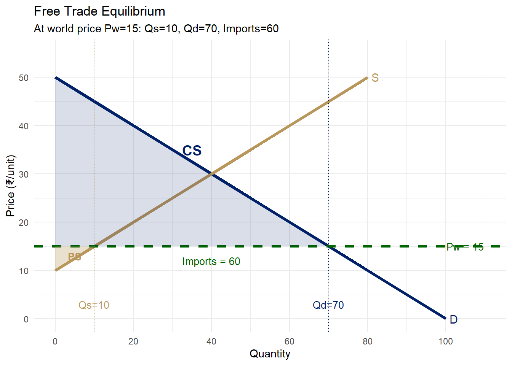

Pw <- 15
Pautarky <- 30
ggplot() +
geom_segment(aes(x=0, y=50, xend=100, yend=0), color="#012169", linewidth=1.5) +
geom_segment(aes(x=0, y=10, xend=80, yend=50), color="#B9975B", linewidth=1.5) +
geom_hline(yintercept=Pw, linetype="dashed", color="darkgreen", linewidth=1.2) +
annotate("polygon", x=c(0,0,70), y=c(50,15,15), fill="#012169", alpha=0.15) +
annotate("polygon", x=c(0,10,0), y=c(10,15,15), fill="#B9975B", alpha=0.3) +
geom_vline(xintercept=10, linetype="dotted", color="#B9975B") +
geom_vline(xintercept=70, linetype="dotted", color="#012169") +
annotate("text", x=10, y=3, label="Qs=10", size=3.5, color="#B9975B") +
annotate("text", x=70, y=3, label="Qd=70", size=3.5, color="#012169") +
annotate("text", x=102, y=0, label="D", size=4, color="#012169") +
annotate("text", x=82, y=50, label="S", size=4, color="#B9975B") +
annotate("text", x=105, y=Pw, label=paste0("Pw = ", Pw), size=3.5, color="darkgreen") +
annotate("text", x=35, y=35, label="CS", size=5, color="#012169", fontface="bold") +
annotate("text", x=5, y=13, label="PS", size=3.5, color="#B9975B", fontface="bold") +
annotate("text", x=40, y=12, label="Imports = 60", size=3.5, color="darkgreen") +
scale_x_continuous(limits=c(0,110), breaks=seq(0,100,20)) +
scale_y_continuous(limits=c(0,55), breaks=seq(0,50,10)) +
labs(title="Free Trade Equilibrium",
subtitle="At world price Pw=15: Qs=10, Qd=70, Imports=60",
x="Quantity", y="Price (₹/unit)") +
theme_minimal(base_size=11)